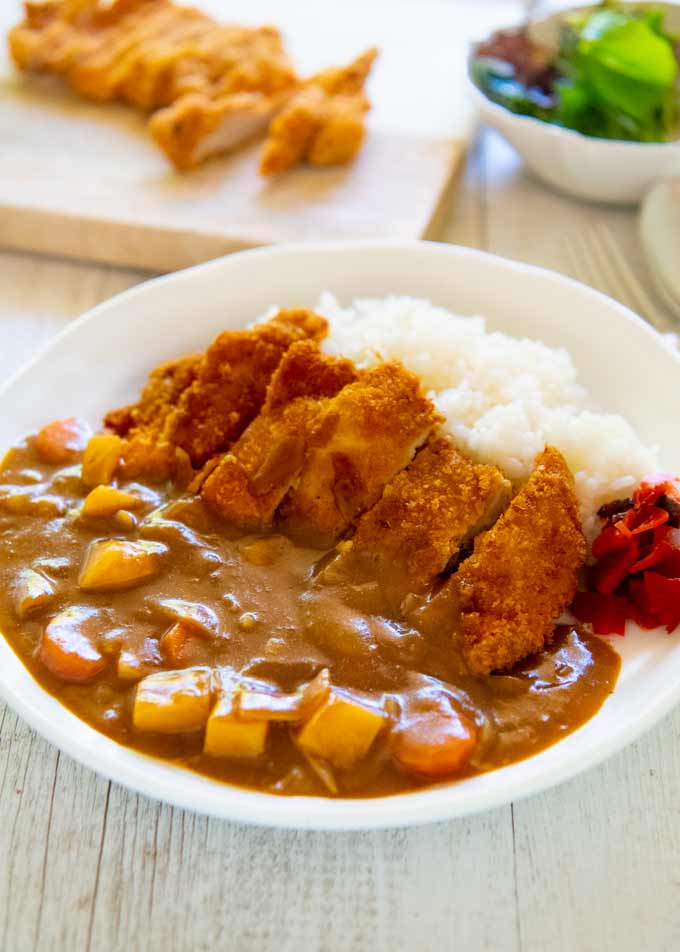

Katsu Curry (Japanese Curry with Chicken Cutlet)
Description
Katsu curry is just a variation of Japanese curry with a chicken cutlet on top. I used a store-bought block of Japanese curry roux which is commonly used in Japanese households. Chicken Cutlet (Japanese version of chicken schnitzel) brings the Japanese curry up to the next level. It’s so delicious and filling.
Ingredients
- House Vermont Curry (medium hot) – see the sample photo of the packet in the post
- Cooked rice
- Onion – sliced into 1cm wide pieces
- Potato – cut to 1.5cm / ⅝” cubes
- Carrot – sliced to 7mm / ¼” thick pieces
- Chicken Cutlet (Japanese Chicken Schnitzel) – cut into 2.5cm / 1″ wide strips
- Fukujinzuke as a condiment (if you have it)
Directions
- Put oil into a pot and sauté onion pieces until the edges start browning
- Add potato and carrot pieces to the pot and stir.
- Add water and bring it to a boil. Remove scum as it rises.
- Add curry roux and cook.
- Cook chicken cutlets and slice them.
- Put cooked rice on one side of a serving plate, place cutlet pieces next to the rice.
- Pour curry on the side next to the cutlet away from the rice.
- Place a small amount of fukujinzuke on the plate.
Reference:
Japan:
Recipe Tin Eats
Return to the main page